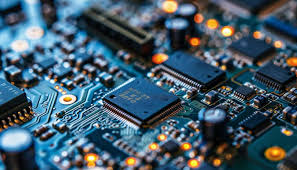

Tipos de Proyectos de Software

Aplicaciones webUna aplicación web es un software que se ejecuta en el navegador web. Las empresas tienen que intercambiar información y proporcionar servicios de forma remota. |
Aplicaciones móvilesUna aplicación móvil se define como un programa informático diseñado para dispositivos móviles, como teléfonos celulares o tablets |
Aplicaciones para escritorioUna Aplicación de Escritorio es un programa de software creado para ejecutarse en un sistema informático con y sin acceso a Internet y navegador. |

Sistemas embebidoses un sistema de computación basado en un microprocesador o un microcontrolador diseñado para realizar una o algunas pocas funciones dedicadas, frecuentemente en un sistema de computación en tiempo real. |
Desarrollo de videojuegosEl diseño o desarrollo de videojuegos es un proceso de creación de un videojuego que incluye desde la primera idea o boceto hasta la versión final del videojuego. |